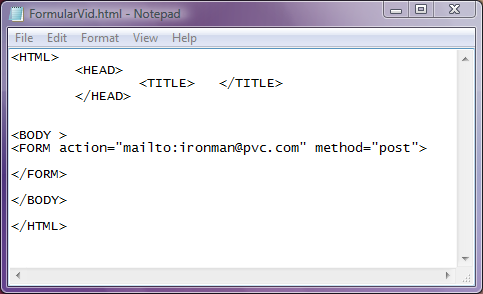

Eticheta FORM si atributele ei
Formularele sunt instrumente puternice prin care, cu ajutorul zonelor active reprezentate de butoane, casete
de selectie campuri de editare, casete de validare, butoane de optiuni, etc., utilizatorul poate introduce informatii
si le poate trimite unui server din Internet. In principiu lucrurile stau cam asa:
-utilizatorul introduce date in formular si trimite formularul unui server.
- o aplicatie dedicata de pe PC-ul client trimite formularul serverului iar o alta aplicatie, de pe server, analizeaza
si prelucreaza formularul stocand (daca e nevoie) informatiile intr-o baza de date.
-serverul expediaza un raspuns utilizatorului daca acest lucru este necesar
Atributele etichetei FORM sunt cele care determina modul de gestionare a formularului. Ele sunt:
Atributul Action
Acest atribut precizeaza ce se va intampla cu datele formularului odata ce acestea ajung la destinatie.
De regula, valoarea atributului "Action" este adresa URL a unui script aflat pe un server WWW care primeste datele
formularului, efectueaza o prelucrare a lor si expedieaza catre utilizator un raspuns. Scripturile (care nu fac obiectul
acestui tutorial) sunt coduri scrise folosind diverse limbaje de programare: Perl, PHP, Unix, Java, etc.
De exemplu action="http://www.yahoo.com/cgi-bin/nume_fis.cgi" va apela un script dintr-un fisier aflat pe serverul
de la Yahoo.com.
De asemenea, atributul action poate avea ca valoare action="mailto:xxxxx@xxx" unde dupa mailto: urmeaza o adresa
de posta electronica valida. In acest caz, aceasta va fi destinatia datelor din formular.
Atributul Method Acest atribut stabileste prin valorile sale metoda utilizata de browserul client
pentru expedierea datelor formularului. Avem de ales dintre doua metode.
method="get" -este valoarea implicita pentru cazul in care atributul method lipseste. In aceasta situatie
datele din formular sunt adaugate la adresa URL specificata de atributul Action. Utilizand valoarea get
utilizatorul este limitat la cantitati mici de date, sub 1 KB. Intre adresa URL de expediere si date va fi inserat
semnul "?" iar datele vor fi transmise cu sintaxa NumeCamp1=Valoare1 & NumeCamp2=Valoare2 & etc.ca de exemplu
http://www.yahoo.com/cgi-bin/nume_fis.cgi?nume1 = valoare1&nume2 = valoare2
method="post" - seteaza trimiterea datelor din formular la o adresa de e-mail specificata ca valoare a atributului
action. Prin metoda "post" datele sunt trimise separat, apelandu-se la un program de gestionare a postei electronice de
pe calculatorul client (de exemplu Outlook, Windows Mail sau alt program care este setat ca implicit de catre utilizator).
Prin aceasta metoda pot fi trimise cantitati mari de date, de ordinul MB.
Folosind intr-un formular doar atributele action si respectiv method, formularul va fi vid. Adica in pagina web in care
am construit formularul nu va exista nimic vizibil. Pentru a adauga diferite controale in formular este necesara
parcurgerea sectiunii Controale si atributele lor.
Iata un exemplu de formular vid:

Inapoi la Formulare